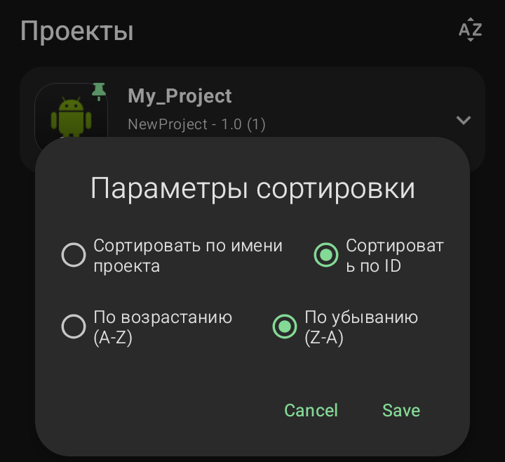

Сортировка списка проектов

Если у вас много проектов, их можно упорядочить для удобства.
·
Сортировать по имени проекта:
Расположит карточки в алфавитном порядке.
·
Сортировать по ID:
Расположит проекты в порядке их создания (по внутреннему идентификатору).
·
По возрастанию (A-Z):
Прямой алфавитный порядок (от А до Я).
·
По убыванию (Z-A):
Обратный алфавитный порядок (от Я до А).
·
Cancel / Save:
Кнопки отмены или сохранения выбранного варианта сортировки.
Sketchware Pro 7 · Автор: RasNikGal · © 2026